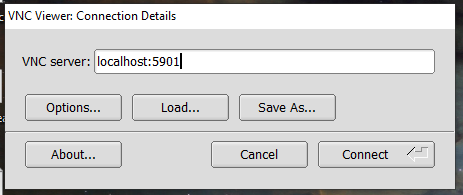
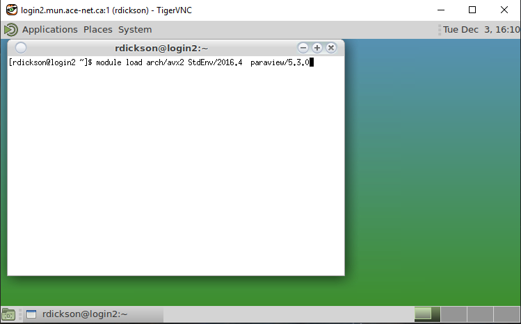

ParaView is a 3D data visualization application.
2019 December 3: While we are awaiting a direct connection of Siku.ace-net.ca to the internet, running ParaView involves setting up a two-part SSH tunnel. (See also Access workarounds.)
We hope to be able to simplify this guide in the near future.
Install a VNC client on your local machine, if you don't already have one. Illustrations on this page use TigerVNC.
In one terminal:
[you@yourhost ~]$ ssh you@placentia.ace-net.ca -p 22 -L 2222:login2.mun.ace-net.ca:22
In a second terminal, set up a second tunnel:
[you@yourhost ~]$ ssh localhost -p 2222 -L 5901:login2.mun.ace-net.ca:5901
Then in that same (second) terminal, start vncserver on Siku.
The first time you do this you will be asked to create a VNC-specific password. This is distinct from your system login password; please do not re-use an existing password. Remember or record the password you set. You will need it later.
[you@login2 ~]$ vncserver You will require a password to access your desktops. Password: Verify: Would you like to enter a view-only password (y/n)? n New 'login2.mun.ace-net.ca:3 (you)' desktop is login2.mun.ace-net.ca:3 Creating default startup script /home/you/.vnc/xstartup Creating default config /home/you/.vnc/config Starting applications specified in /home/you/.vnc/xstartup Log file is /home/you/.vnc/login2.mun.ace-net.ca:3.log [you@login2 ~]$
(You will not be prompted to create a new password each time. You can change the VNC password later using vncpassword.)
Take note of the number VNC assigns to your virtual desktop: "3" in the example above. You will need it to clean up later.
On your local computer, start the VNC client and point it at localhost:5901:

Then connect. You will be prompted for the VNC-specific password you set the first time you started vncserver. Then in a few seconds a virtual desktop should appear:

In a terminal on the virtual desktop, load the necessary environment modules and start ParaView:
[you@login2 ~]$ module load arch/avx2 StdEnv/2016.4 paraview/5.3.0 [you@login2 ~]$ paraview
Exit ParaView and exit your VNC viewer.
Terminate the VNC server you started on Siku. In the same terminal where you ran vncserver and noted the desktop number, run vncserver -kill :# replacing "#" with the desktop number.
[rdickson@login2 ~]$ vncserver -kill :3 Killing Xvnc process ID 32621
Finally, terminate each of the two SSH tunnel sessions with exit or control-D.
You can also user ParaView's client-server mode instead of VNC. This requires that you have matching ParaView versions available on your local machine and Siku. Compute Canada documentation on ParaView provides some guidance here, but we have not yet documented the variances.